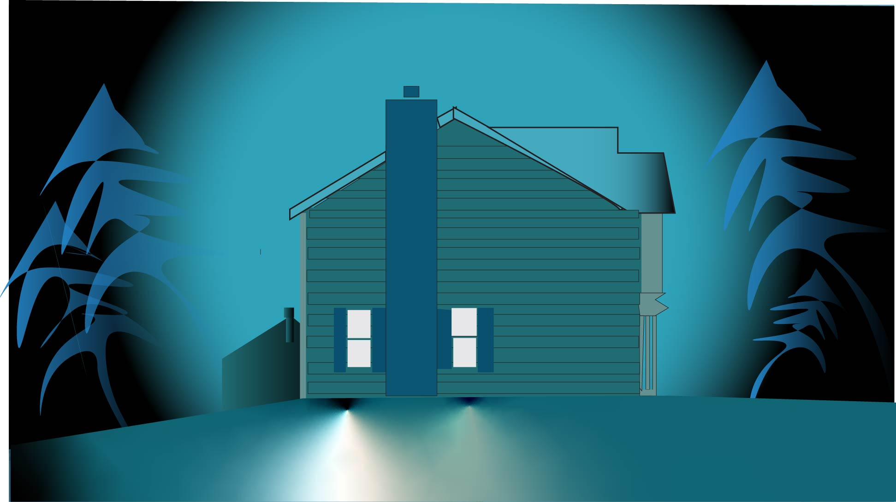
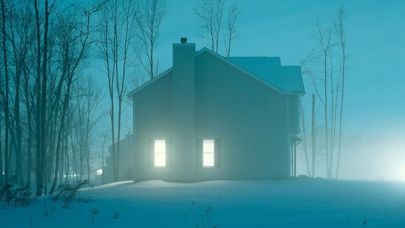

For the Illustrated Environment, I chose to recreate the atmospheric, and moody look of my favorite photographer Todd Hido’s work and turn it into a digital illustration. I chose a photo from his House Hunting series because this is one of my favorite photography books and I think the way he captures suburban isolation is really incredible. I thought his style would translate perfectly with this assignment. My goal wasn't just to make an exact copy of the photo, but I wanted to recreate the specific glowing look of the image using vector tools and gradients. Instead of making the trees and lighting look spot on, I made the trees look cartoonish, wispy and mystical. I also added a dark circle around the homes to emphasize the moodiness and make the house pop more. The dark circle and trees frame the house and put it as the center subject surrounded by a dark and mysterious outside world.
HOME